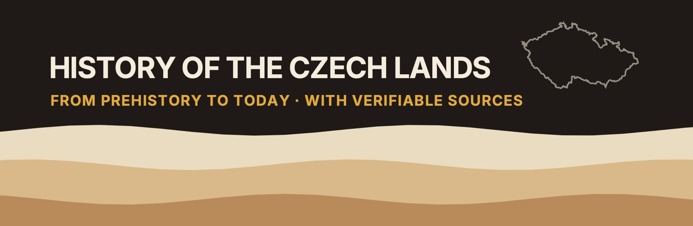

History of the Czech Lands – sources and pictures
Sources and picture credits for the channel's videos. Every picture lists its author, licence and a link to the original file.
▶ Channel on YouTube- Episode 1: The First People: From the Oldest Stone Tools to the Mammoth Hunters
- Episode 2: The First Farmers: The Neolithic and the Copper Age in the Czech Lands
- Episode 3: The Bronze Age and the Hallstatt Period: From the Únětice Culture to Býčí skála
- Episode 4: The Celts and Bohemia: The La Tène Period in the Czech Lands
- Episode 5: Germanic Tribes and Rome: The Marcomanni, Legions in Moravia and the Migration Period
- Episode 6: The Coming of the Slavs and Samo: The First Slavs in the Czech Lands
- Episode 7: Great Moravia: The First State in the Czech Lands
- Episode 8: The First Přemyslids
- Episode 9: The Přemyslid State
- Episode 10: The Golden Bull of Sicily
- Episode 11: The Iron and Golden King